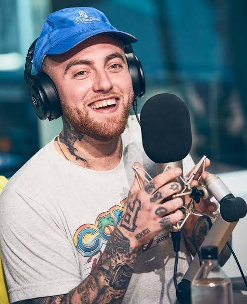

Release: September 16, 2016
Label: REMember Music / Warner Bros. Records
Producer: Executive produced by Mac Miller himself, alongside a variety of contributing record producers and musicians for individual tracks (such as Pomo and Frank Dukes).
The project was never meant to be a full-length album. Mac originally planned to drop a short 3-track EP, but as he kept exploring themes of love, femininity, and human connection, he realized he had built an entire sonic world that deserved a full album release.
While working on GO:OD AM, Mac initially envisioned doing a secret double-release inspired by OutKast’s Speakerboxx/The Love Below. The counterpart project was rumored to be titled The Sacred Masculine (produced by Metro Boomin), but Mac pivoted to focus entirely on The Divine Feminine.

The 8-minute album closer featuring Kendrick Lamar ends with a heartwarming, unscripted spoken-word audio clip of Mac’s grandmother, Nomi, recounting the story of how she fell in love with Mac’s grandfather and kept their bond strong over decades.